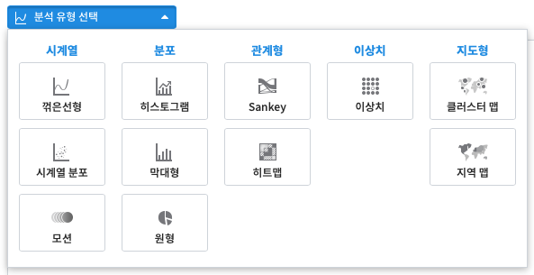

IRIS Documentation
For Users
User Guide/Manual
Tutorials Manual
IRIS Analyzer
1. 검색
2. 피벗분석
3. 시각화
3.1. 시각화 분석 방법
3.2. 시각화 이미지 파일 저장
3.3. 시각화 분석 템플릿 저장
IRIS Studio
Usecase
About Tutorial Versions
For Developers
Developers Guide
IRIS Documentation
»
Tutorials
»
3.
시각화
»
3.1.
시각화 분석 방법
View page source
3.1.
시각화 분석 방법
¶
시계열, 분포, 관계형, 이상치, 지도형과 같은 시각화 분석 유형을 선택할 수 있습니다.

3.1.1. 시계열형 그래프
3.1.1.1. 꺾은선형 - 단일 차트 - 시계열 그래프
3.1.1.2. 꺾은선형 - 단일 차트 - 그룹별 시계열 그래프
3.1.1.3. 꺾은선형 - 단일 차트 - 중첩 시계열 그래프
3.1.1.4. 꺾은선형 - 다중 차트 - 다중 시계열 그래프
3.1.1.5. 시계열 분포 - 산점도
3.1.1.6. 모션 차트
3.1.2. 분포형 그래프
3.1.2.1. 히스토그램 - 단일 히스토그램
3.1.2.2. 히스토그램 - 그룹별 히스토그램
3.1.2.3. 막대형 그래프 - 기본형
3.1.2.4. 막대형 그래프 - 집계형
3.1.2.5. 막대형 그래프 - 스택형/풀스택형
3.1.2.6. 원형 그래프 - 기본형
3.1.2.7. 원형 그래프 - 집계형
3.1.3. 관계형 그래프
3.1.3.1. Sankey chart
3.1.3.2. 히트맵
3.1.4. 이상치형 그래프
3.1.4.1. 이상치 그래프
3.1.5. 지도형 그래프
3.1.5.1. 클러스터 맵
3.1.5.2. 지역 맵